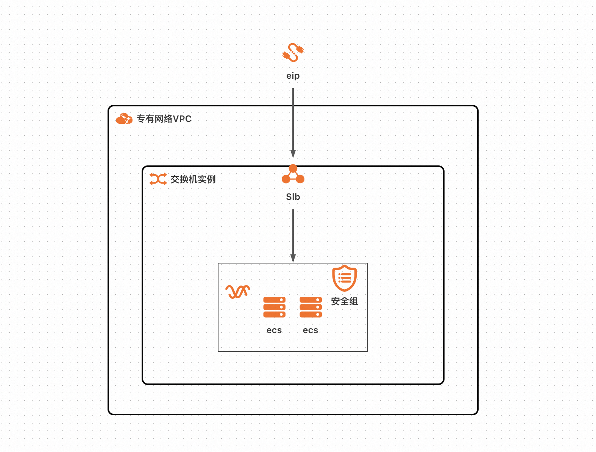
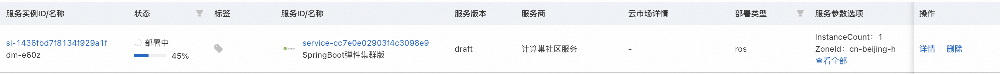
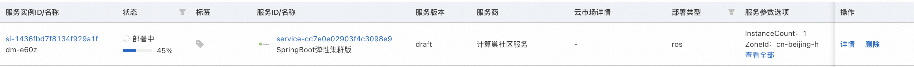
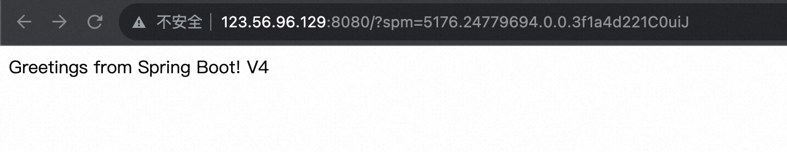
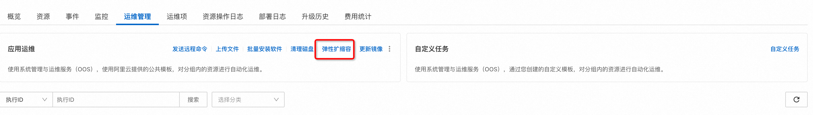
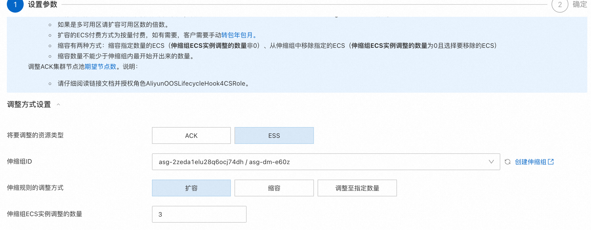
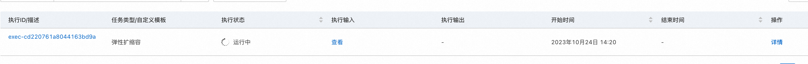
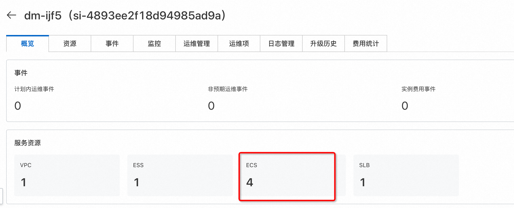

服务模版说明文档
服务说明
本文介绍基SpringBoot+软件包的ecs集群版服务快速上手流程，本示例对应的Git仓库地址：springboot-scaling-ecs-demo。
本示例会自动的构建计算巢服务，具体的服务构建流程为： 1. 上传文件并构建计算巢文件部署物 2. 创建计算巢服务并关联文件部署物
创建过程大约持续1分钟，当服务变成待提交后构建成功。
服务架构
本部署架构为集群ecs部署，通过eip 8080端口访问，配备负载均衡和弹性伸缩组，具体如图所示: 
服务构建计费说明
测试本服务构建无需任何费用，创建服务实例涉及的费用参考服务实例计费说明。
部署步骤
- 部署链接

- 单击部署链接，进入服务实例部署界面，根据界面提示，填写参数完成部署。

- 参数填写完成后可以看到对应询价明细，确认参数后点击下一步：确认订单。

- 确认订单完成后同意服务协议并点击立即创建，进入部署阶段。
 
 - 等待部署完成后就可以开始使用服务，进入服务实例详情点击visitUrl。

- 部署结果 
- 弹性扩缩容    等待结束执行后可以看到资源中新增了3台ecs，完成了扩缩容。 
服务详细说明
基础服务说明请参考SpringBoot软件包部署单机版，本文在此基础上新增了slb和ess的配置。
- slb给ecs配置负载均衡并绑定对应的eip。
- ess配置增加弹性伸缩能力可以随时扩缩容。
服务配置
服务交付
其他
© 2009-2022 Aliyun.com 版权所有